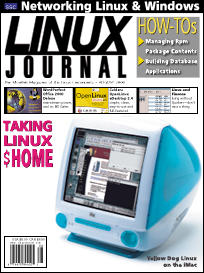

Shutdown Archive web server
Search:
Linux Journal
Issue #76/August 2000

Focus
From the Editor
by Editorial Staff
Features
LinuxPPC on the Macintosh PowerBook
by Richard Kinne
Linux goes Mac portable...
Yellow Dog Linux on the iMac
by Stew Benedict
A guide to installing and running YDL on a power PC.
Linux Finance Programs Review
by Ralph Krause
Forum
Writing a Java Class to Manage RPM Package Content
by Jean-Yves Mengant
A look inside RPM packages and how to use Java to extract information.
The Artists' Guide to the Desktop—Part IV
by Michael J. Hammel
Variety is the spice of life.
Comparing Java Implementations for Linux
by Michael Hirsch
No hype here—find out what Java really is and what choices you have with Java for Linux.
Configuring Bash
by David Blackman
A quick introduction to the Bash shell.
VARs: Increasing Margins Through Free Software
by Dean Taylor
The Internet has shifted the power of presence, acquisition and is in the beginnings of shifting the power of commerce. Many Value Added Resellers (VARs) have recognized this shift and have been able to change with the new economy.
Reviews
EasyLinux v1.2
by Pedro Bueno
PCI Symphony Network Cards
by Denny Fox
ImageStream IS Gateway and Rebel Routers
by Jon Valesh
FreeNetshop
by Kevin Lyons
Linux and The Linksys EtherFast Instant GigaDrive
by Billy Ball
WordPerfect Office 2000 Deluxe
by Jon Valesh
Caldera OpenLinux eDesktop 2.4
by Jon Valesh
Open Source Linux: Web Programming
by Daniel Lazenby
Building Database Applications on the Web Using PHP3
by Gaelyne R. Gasson
Columns
Linux Apprentice: A Heterogeneous Linux/Windows 95 Home Network
Here's how to network your Windows machines to your Linux server.
by Chirakkal Easwaran
Take Command
: klogd: The Kernel Logging Dæmon
by Michael A. Schwarz
Kernel Korner
kHTTPd, a Kernel-Based Web Server
by Moshe Bar
Linley on Linux Linux on Wheels: A New Opportunity
Within five years, almost every car will have a powerful computer that provides a variety of services. Linux is a contender to win a large share of this market.
by Linley Gwennap
Cooking with Linux
Organizing your $HOME
by Marcel Gagné
Organize your $HOME directory.
At the Forge
Session Management with Mason
by Reuven M. Lerner
Focus on Software
by David A. Bandel
Embedded Systems News
by Rick Lehrbaum
The Last Word
by Stan Kelly-Bootle
Departments
upFRONT
Penguin's Progress: Do manufacturers have any responsibility?
by Peter H. Salus
Linux for Suits
The Shrinking Subject
by Doc Searls
Best of Technical Support
New Products
Archive Index
Shutdown Archive web server
Search:
Copyright © 1994 - 2018
Linux Journal
. All rights reserved.